מבואשגרה – מבט ממוקדעומס – מזהים את הדפוסחירום – תמונת מצבקו הסיום
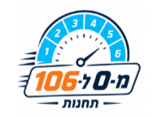
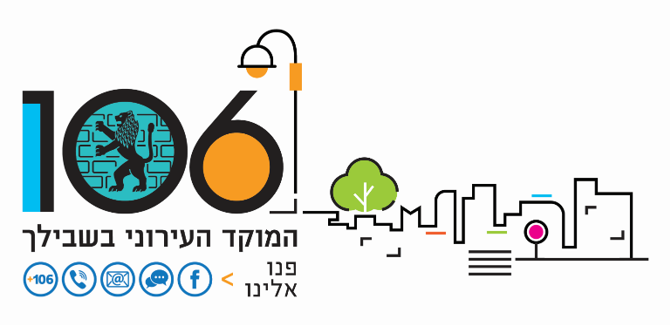
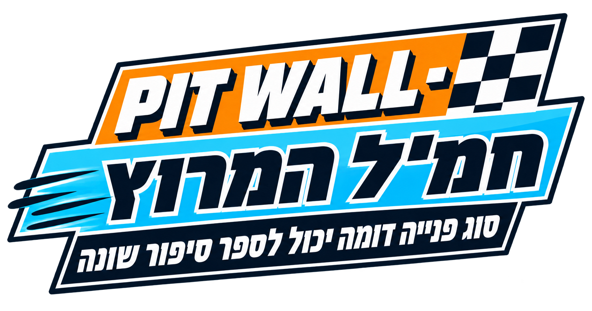
לפני שהמרוץ מתחיל, כדאי שתכירו:
ניתן להתקדם קדימה ולחזור אחורה באמצעות כפתורי הניווט בתחתית המסך.
סרגל ההתקדמות העליון יציג בכל שלב באיזה פרק אתם נמצאים וכמה מהלומדה כבר השלמתם.
בחלק מהמסכים תתבקשו ללחוץ על אזורים שונים במסך, לבחור תשובות או לקבל החלטות כפי שנעשה בעבודה במוקד.
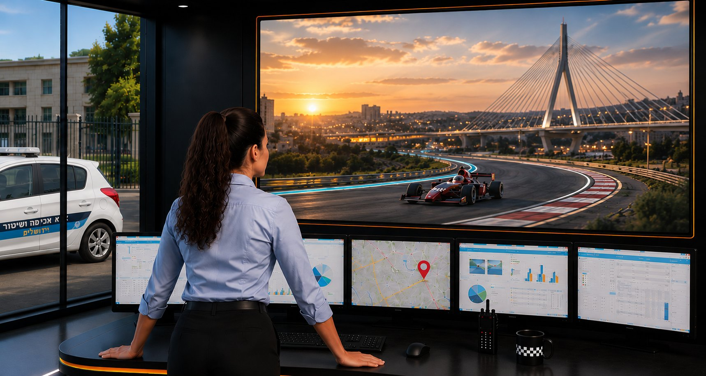
מוקד עיריית ירושלים שלום...
המוקד רוחש, כמה שיחות מתקבלות במקביל.
עברו על כל שיחה והחליטו: פנייה שגרתית או דורשת תשומת לב?
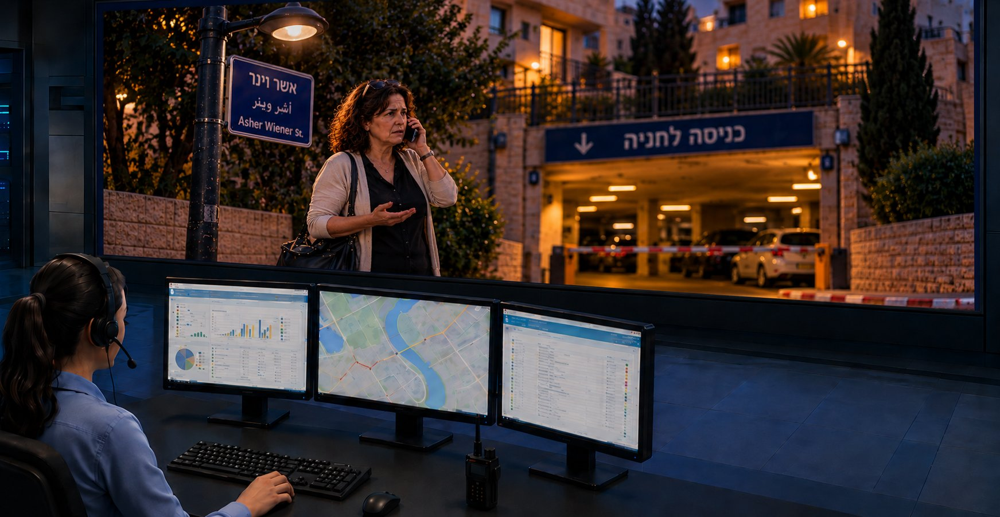
שיחה 1 · תושבת על הקו"שלום, הפנס ליד הבניין שלנו לא עובד מאתמול בערב. ברחוב חברון פינת אשר וינר, ליד הכניסה לחניה."
1שיחה 12שיחה 23שיחה 3
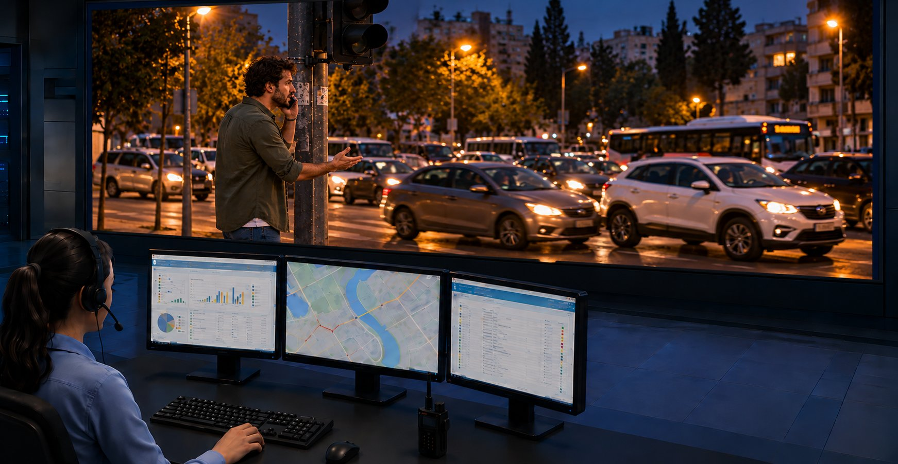
שיחה 2 · תושב על הקו"הרמזור בצומת מעלה דרגה פינת שמואל מאיר לא עובד. המכוניות נכנסות לצומת בלי סדר, וכמעט הייתה תאונה!"
1שיחה 12שיחה 23שיחה 3
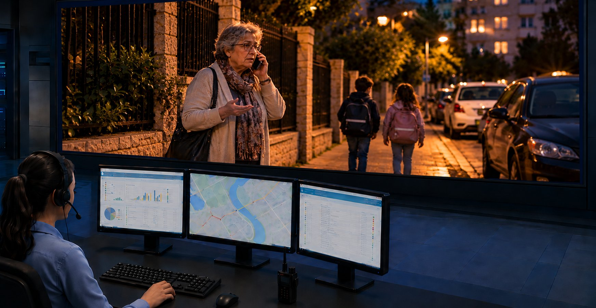
שיחה 3 · תושבת על הקו"כל הרחוב חשוך עכשיו, ואני רואה שגם הרחוב ליד חשוך. יש ילדים שחוזרים מהחוגים ואין בכלל תאורה – אנחנו ברחוב בר אילן פינת ירמיהו."
1שיחה 12שיחה 23שיחה 3
🏁 סיימתם את סבב השיחות!
✓ עניתם נכון על 3 מתוך 3 שיחות
כשמסתכלים על כל פנייה בנפרד, מחליטים האם היא שגרתית או דורשת תשומת לב וטיפול מיידי.
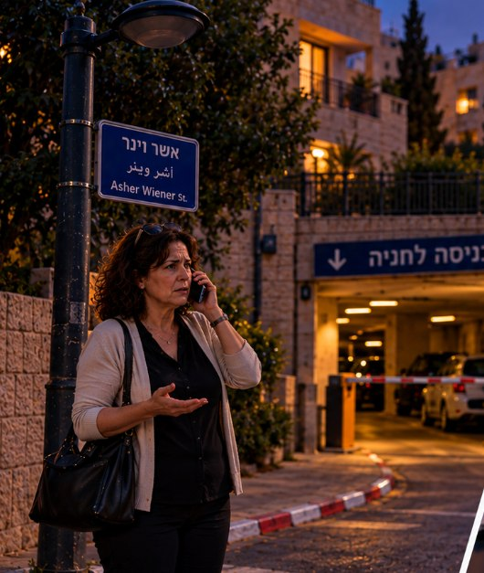
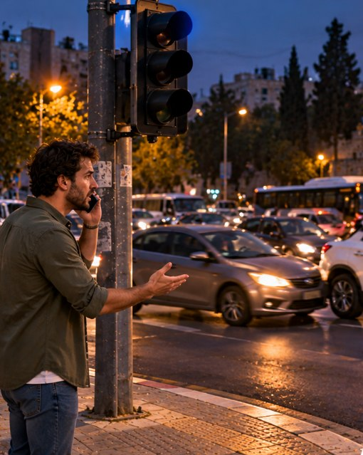
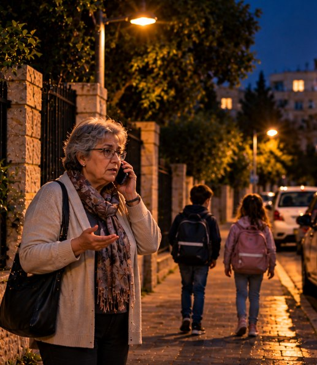
אבל מה קורה כשהפניות מתחילות להתחבר לתמונה רחבה יותר וליצור דפוס?
מנהלי המרוץ ב-Pit Wall
בכל מרוץ, מנהלי המרוץ יושבים ב-Pit Wall: צופים ומקשיבים לכל מה שקורה לאורך המרוץ. הם אלו שרואים את הנתונים ואת תמונת המצב המלאה – עד לניצחון של הנהג.
כך גם אתם: כל פנייה המתקבלת במוקד נבחנת ומטופלת בפני עצמה. אך כמוקדנים, לא תמיד מספיק לשאול את עצמכם "האם זו פנייה שגרתית?" – נדרש לשאול גם:
מה קורה סביב הפנייה?האם מתקבלות פניות נוספות / דומות?האם אנחנו מזהים סימן לעומס?האם קיימות הנחיות מיוחדות?האם נדרש תיעדוף, עדכון או מעקב?
ביחידה הזו נלמד להסתכל על עבודת המוקד דרך שלוש נקודות מבט:
הפנייהמבט בשגרה
הדפוסמבט בעומס
המצבמבט בחירום
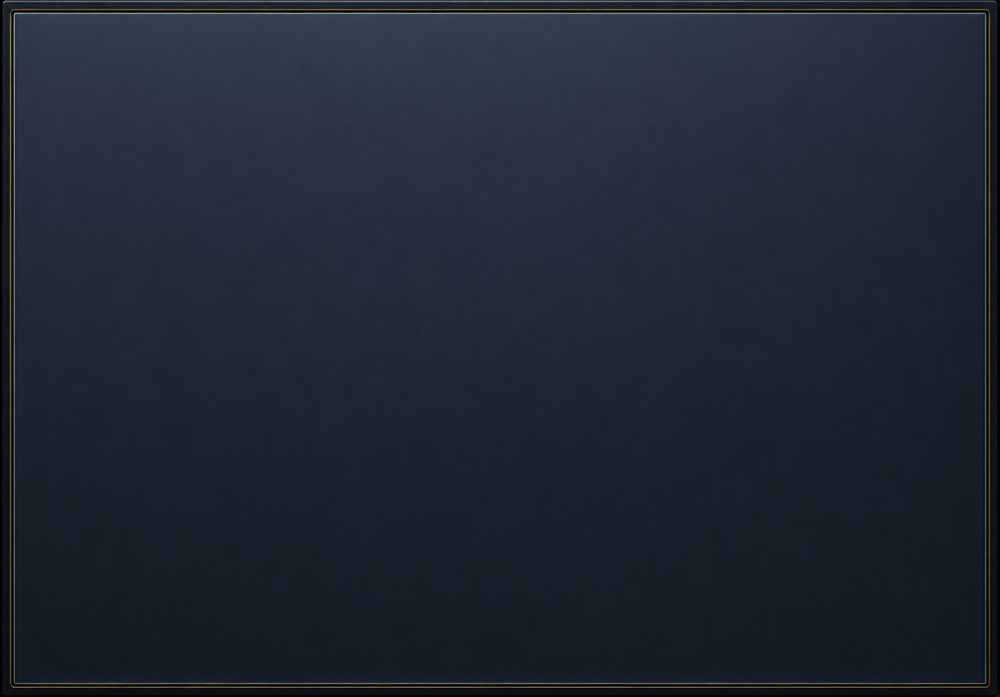
רגע לפני ה-ZOOM IN
לפני שנבחין בין שגרה, עומס וחירום, עלינו להבין: מהי שגרת העבודה הקבועה של המוקד?
← לחצו להרחבה
המוקד פועל לאורך כל שעות היממה, ודרך העבודה משתנה לפי המשמרת:
משמרת בוקר7:00 – 15:00
משמרת ערב15:00 – 23:00
משמרת לילה23:00 – 7:00
משמרת סופ״ש / חגשבת וחג
בבוקרהפניות מועברות למחלקות בהתאם לשעות הפעילות, באמצעות ה-CRM. בפניות דחופות או בטיחותיות, ובהעברת פנייה לגורמי חוץ – נדרש גם להתקשר.
בערב, בלילה, בסופ״ש ובחגרוב המחלקות כבר מסיימות פעילות או אינן פעילות (שבת/חג), ולכן נתעד את הפנייה ב-CRM. בפניות דחופות או בטיחותיות, ואם הפנייה אינה סובלת דיחוי ליום המחרת – בודקים בדף הכוננות ויוצרים קשר טלפוני עם הגורם התורן, או פועלים בהתאם להנחיית האחמ״ש.
יש להגיע 10 דק' לפני תחילת המשמרת, לפתוח מערכות ולקרוא את התדריך
בכל איחור / ירידה ממשמרת, יש לעדכן את עמדת האחמ״ש ואת אחראית סידור העבודה
יש להירשם בדף ההפסקות ולעדכן את האחמ״ש כאשר מגיע התור להפסקה
בכל שיחה חלה חובת הזדהות ("מוקד שלום, מדבר/ת...")
יש לתעד כל שיחה במערכת ה-CRM
יש לנתב את כל ההודעות! במהלך המשמרת ובסיומה
יש לעבור על פניות "לא שייך למחלקה" במהלך המשמרת
יש להעביר טלפונית, לגורם הרלוונטי, כל הודעת בטיחות – ולציין למי הועברה
יש לעקוב אחר תצוגת "כל מה שחשוב לי" במהלך המשמרת, כדי להישאר מעודכנים
יש להגיש סידור עבודה באפליקציה בלבד, עד יום שני בשעה 13:00 – הסידור מתפרסם אחת לשבועיים
יש לשמור על סביבת עבודה נקייה
יש להציג / לשלוח אישור מחלה בעת היעדרות בעקבות מחלה
בשגרה מתמקדים בפנייה
המוקדנים – אתם – נקודת הפתיחה של הפנייה ושל תהליך הטיפול, כפי שראיתם ביחידות הקודמות. בואו נראה מה אתם זוכרים: גררו את השלבים וסדרו נכונה את מודל הטיפול בפנייה.
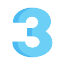
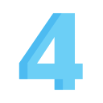
מחסן אפשרויות:
סיווג פנייה
פתיחת הדיווח
סגירת פנייה
איסוף נתונים
העברה לגורם המטפל
מדויק להפליא!זהו מודל הטיפול בפנייה.
פתיחת הדיווח ← איסוף נתונים ← סיווג פנייה ← העברה לגורם המטפל ← סגירת פנייה. בשקף הבא נחזור בקצרה על כל שלב.
לא מדויק…נסו שוב!
השלבים שסומנו בכתום אינם במקום הנכון. השלבים שסומנו בירוק נשארים במקומם.
לא מדויק…שימו לב לסדר השלבים.
קודם מקשיבים ופותחים את הדיווח, אחר כך אוספים נתונים ומסווגים את הפנייה, ורק לאחר מכן מעבירים לגורם המטפל ובסוף – סגירת הפנייה.
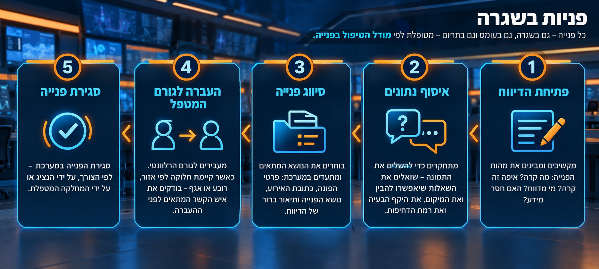
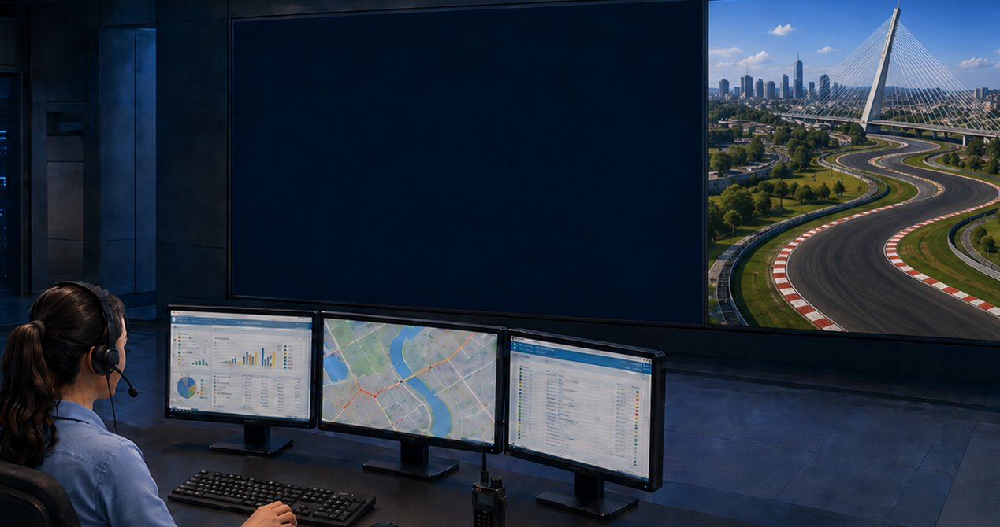
נכנסתם למסך הגדרות הפנייה
לכל מידע המתקבל על הפנייה יש השפעה על האופן שבו תסווג הפנייה ועל מי שיטפל בה. לחצו על כל אייקון להרחבה על "מה יכול להשפיע" על כל פנייה המתקבלת במוקד.
סכנה
זמן / שעה
גורם מטפל
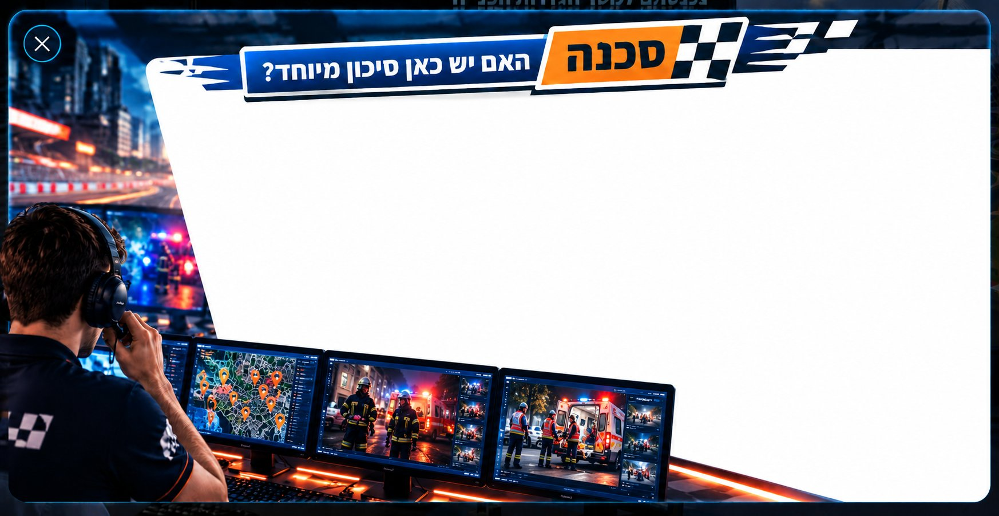
פניות הדורשות תשומת לב מיוחדת הן פניות שיש בהן סכנה לאנשים, לרכוש או למרחב הציבורי.
לדוגמה: רמזור שלא עובד, בור פתוח, חפץ בנתיב נסיעה, מבנים מסוכנים, מקרר עם דלתות ועוד.
בכל נושא בטיחותי נדרש:
להעביר את הפנייה טלפונית
לרשום למי הועברה הפנייה
לבצע מעקב עד שהפנייה נסגרת
לפני שמעבירים, יש לוודא:
תיאור ברור של הסיכון: איפה זה נמצא, מה בדיוק הסכנה, האם יש חסימה, והאם נדרש טיפול מהיר.
בהתאם לסכנה, יש לדווח לגורם המטפל הרלוונטי – בתוך העירייה, או גורם חיצוני לעירייה כמו: חברת חשמל, בזק, דפו (הרכבת הקלה) ועוד.
שימו לב: לחברות חיצוניות לעירייה אין את ה-CRM שלנו, ולכן אנחנו נדרשים לוודא טיפול ולסגור את הפנייה. רשימת המידע המלאה – במערכת ניהול הידע.
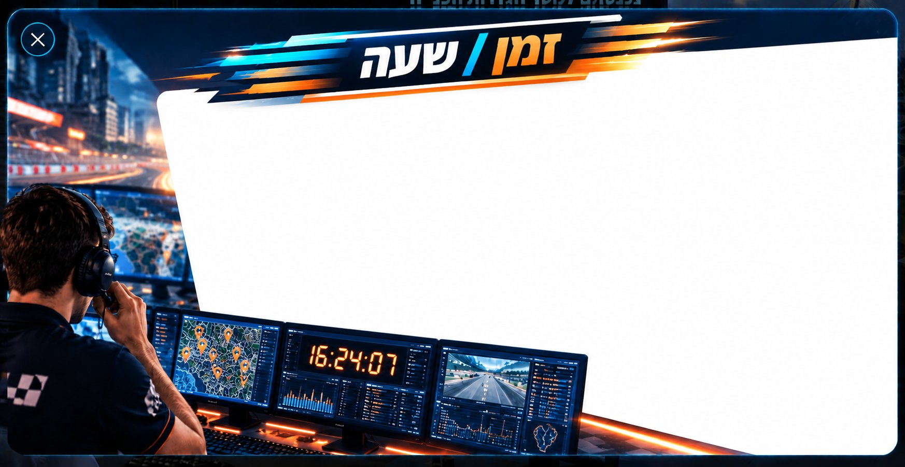
אותה פנייה יכולה לקבל מסלול טיפול שונה לפי השעה שבה היא מתקבלת.
לכל מחלקה יש שעות פעילות מוגדרות. בשעות הפעילות, הפנייה עוברת בדרך כלל למחלקה או לגורם המטפל הרלוונטי. לאחר שעות הפעילות – ברוב המקרים החל מהשעה 15:30 – המחלקות אינן עובדות. לכן, בפנייה המתקבלת בערב, בלילה, בסוף שבוע או בחג, עלינו לבדוק:
האם קיים כונן / תורן למחלקה?
האם יש גורם ספציפי שמטפל בנושא?
האם הפנייה דחופה או בטיחותית?
האם צריך להציף לאחמ״ש לפני ההעברה?
פנייה שאינה דחופה וניתן לטפל בה למחרת – פותחים כפי שלמדנו. פנייה שדורשת טיפול מיידי – פונים טלפונית לכונן / לתורן הרלוונטי.
לדוגמה: גדר פרוצה באתר בנייה – ביום: למחלקת פיקוח על הבנייה. אחרי 15:30: לכונן המחלקה. בסיום הכוננות (אמצע שבוע – 00:00): לצוות 4.
רשימת הכוננות המלאה מתפרסמת במערכת ניהול הידע – הקפידו להתעדכן בה.
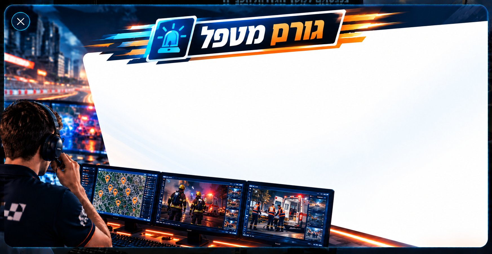
כל פנייה שמגיעה למוקד מטופלת על ידי אגף, מחלקה עירונית או גוף חוץ־ארגוני: מים וביוב, תקשורת, חשמל, כבאות, משטרה, תשתיות או תחבורה.
לפני שמעבירים נבדוק:
מי אחראי בפועל על התחום?
האם נדרשת פתיחת פנייה בלבד, או גם העברה נוספת?
האם הגורם המטפל מחולק לפי אזור?
האם יש ספק שמחייב הצפה לאחמ״ש?
גורם בעירייה: מעבירים את הפנייה ב-CRM או טלפונית, בהתאם לדחיפות ולשעה שבה היא מתקבלת. זכרו! ישנם אגפים ומחלקות המחולקים למרחבים / אזורים / נפות – כך תוכלו לסווג נכון את הפנייה ולפנות לגורם הרלוונטי גם במשמרות ערב ובמקרים דחופים. לדוגמה: המאור והגננות – לפי אזורים; תברואה וניקיון – לפי נפות.
גורם חיצוני: פותחים את הפנייה ב-CRM, ומפנים לגורם החיצוני בטלפון או בפתיחת פנייה באתר שלו.
יש ספק? בדקו במערכת ניהול הידע מהו המסלול הנכון.
שגרה: מבט ממוקד
בשגרה אתם מתמקדים בפנייה שמולכם: בודקים מה קרה, איפה זה קרה, מה רמת הדחיפות, איך נכון לסווג את הפנייה ומי הגורם שצריך להמשיך את הטיפול.
לפני שמעבירים פנייה, בודקים מה יכול להשפיע על מסלול הטיפול:
סכנהזמן ושעהגורם מטפל
כאשר כל פנייה מטופלת ומתועדת נכון – תמונת המצב ברורה.
אבל מה קורה כשלא מדובר בפנייה אחת, אלא במספר פניות שמתחילות להצביע על אותו דפוס?
עומס – מזהים את הדפוס
בשגרה התמקדנו בפנייה אחת: מה קרה? איפה זה קרה? איך מסווגים? למי מעבירים? אבל עומס לא תמיד מתחיל בהכרזה – הוא מתחיל בדפוס של סימנים.
לחצו על המקומות המסומנים במפה להרחבה
1
ריבוי פניות בזמן קצר
2
אותה תופעה חוזרת
3
אותו אזור
4
רמת דחיפות
עומס מזוהה דרך חזרתיות:
כמותדמיוןאזורגורם מטפלדחיפות
ריבוי פניות בזמן קצר
כשנכנסות הרבה פניות בזמן קצר, קצב העבודה משתנה.
אותה תופעה חוזרת
כאשר כמה תושבים מתארים בעיה דומה, ייתכן שלא מדובר בפניות נפרדות אלא בתופעה אחת שמופיעה בכמה מקומות.
לדוגמה: חפץ על הכביש.
אותו אזור
אם כמה פניות מגיעות מאותה שכונה, צומת, מוסד ציבורי או אזור סמוך, המיקום עצמו הופך לסימן.
לדוגמה: שכונה שלמה ללא אור / חשמל.
רמת דחיפות
כאשר מספר תושבים פונים במקביל וכולם מדווחים על פניות דחופות.
לדוגמה: עצים שנפלו ברחבי העיר, עפו עצמים שונים במרחב, הפרעה לתנועה.
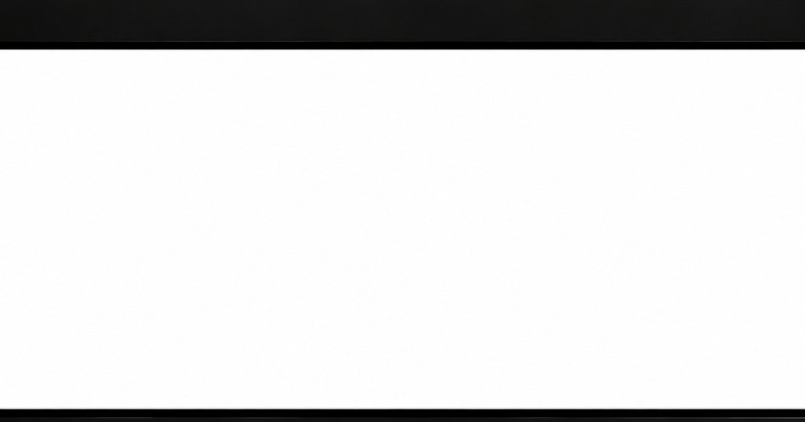
עומס – זיהוי סימנים
קראו את הנתונים על מסך המוקדן – ותענו על השאלה בשקף הבא.
עדכון משמרתמשמרת בוקר · 10:30
שעה
פונה
תיאור הדיווח
מיקום
סטטוס
10:18
תושב
מדווח על כתם שחור על הכביש
רחוב יפו, ליד התחנה המרכזית
חדש
10:23
תושבת
מדווחת כי כמעט החליקה עם הרכב
שדרות שז״ר
חדש
10:27
בעלת עסק
מדווחת כי ראתה עכשיו רוכב קורקינט מחליק ממשהו שיש על הכביש
רחוב יפו פינת שרי ישראל
חדש
במקביל, ממשיכות להיכנס שיחות נוספות למוקד...4 ממתינות
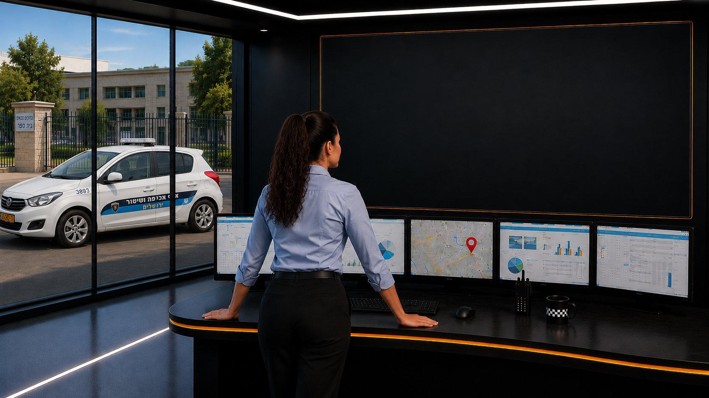
עומס – זיהוי סימנים
מה במסך עדכון המשמרת יכול להעיד שמתחיל עומס?
סמנו את כל הסימנים שזיהיתם (ניתן לסמן יותר מתשובה אחת)
מדויק להפליא!זיהיתם את הדפוס.
עומס לא מזוהה רק לפי מספר הפניות, אלא לפי החיבור ביניהן: פניות שמתקבלות בזמן קצר, מאותו אזור או מאזור סמוך, ועוסקות בנושא דומה או בתופעה שחוזרת בכמה ניסוחים.
כל פנייה צריכה להיבדק ולקבל טיפול – אך כשהפניות מתחילות להתחבר לדפוס, כבר לא מסתכלים רק על השיחה הבודדת, אלא מזהים את הדפוס ומטפלים.
לא מדויק…שימו לב לדפוס.
התשובות הנכונות מסומנות בירוק. עומס לא מזוהה רק לפי מספר הפניות, אלא לפי החיבור ביניהן: פניות שמתקבלות בזמן קצר, מאותו אזור או מאזור סמוך, ועוסקות בנושא דומה.
כל פנייה צריכה להיבדק ולקבל טיפול – אך כשהפניות מתחילות להתחבר לדפוס, כבר לא מסתכלים רק על השיחה הבודדת, אלא מזהים את הדפוס ומטפלים.
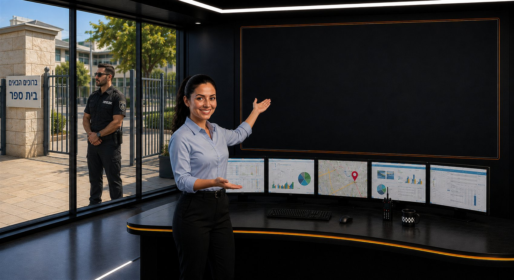
עומס – אופן טיפול
זיהיתם סימנים לעומס. מה נכון לעשות עכשיו?
ניתן לסמן יותר מתשובה אחת
מדויק להפליא!כך מטפלים בעומס.
מודל הטיפול בפנייה הוא המודל שמוביל אותנו – לא משנה אם אנחנו בשגרה או בעומס. לכן ממשיכים לפתוח, לסווג, לתעד ולהעביר את הפניות לטיפול, בהתאם למה שלמדנו.
ברגע שמזהים את הדפוס, מחברים בין הפניות לפי סימני הזיהוי ומבינים שמדובר בעומס – מציפים את המידע לאחמ״ש, ונותנים תשומת לב גבוהה יותר לפניות בטיחותיות.
לא מדויק…מודל הטיפול ממשיך להוביל.
מודל הטיפול בפנייה הוא המודל שמוביל אותנו – לא משנה אם אנחנו בשגרה או בעומס. לכן ממשיכים לפתוח, לסווג, לתעד ולהעביר את הפניות לטיפול, בהתאם למה שלמדנו.
התשובות הנכונות מסומנות בירוק: להמשיך לפתוח ולתעד כל פנייה, להציף לאחמ״ש, ולתת תשומת לב גבוהה יותר לפנייה בנושא בטיחותי. לא ממתינים לעוד פניות ולא סוגרים פניות דומות.
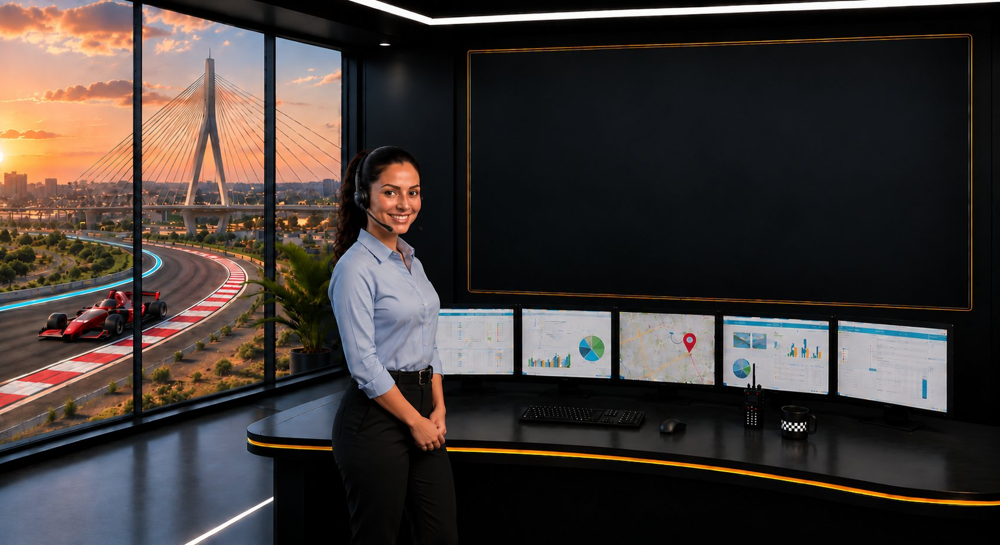
עומס הוא לא רק דפוס
לעיתים העומס צפוי מראש, בעקבות אירועים המתרחשים בעיר:
מרתוניםחגיםמצעדיםאירועי מזג אוויר
במקרים אלו המוקד נערך לעומס מבעוד מועד, עם דף הנחיות מסודר שעוזר לנו לדעת איך להתנהל נכון.
וכשאנחנו מזהים דפוס ומציפים את העומס לאחמ״ש – האחמ״ש רואה את התמונה הכוללת ועוזר לכוון: האם נדרשות הנחיות מיוחדות, ומה התיעדוף המתאים לפניות המגיעות.
זכרו!
צוות המוקד נמצא שם כדי לעזור לכם – בכל דבר.
חירום – עובדים לפי תמונת מצב
בשגרה ובעומס אנחנו מטפלים בכל פנייה לפי מודל הטיפול: מקשיבים, מתחקרים, מתעדים, מסווגים ומעבירים לגורם המתאים.
בחירום, תמונת העבודה משתנה.
בחירום, העירייה ואגפיה לא עובדים במתכונת רגילה. עדיין עלינו לפתוח את הפנייה ולתעד – אך המשך הטיפול בפנייה ייעשה לפי:
ההנחיות הרלוונטיות לחירום באותה העת
דף כוננות ותורנים מעודכן
חמ״לים או קבוצות חירום רלוונטיות
והכול בהנחיית האחמ״ש / הנהלת המוקד.
חירום – אופן פעולה
בשעת חירום עלינו לתעד את כל הפניות המתקבלות על התגית הרלוונטית, בהתאם לאירוע. מכיוון שאגפי העירייה לא עובדים במתכונת רגילה בשעת חירום, עלינו להבין בכל תחקור פנייה מה מחייב פעולה בשעת חירום.
לחצו על השאלות להרחבה
1מה סוג הפנייה? מידע או טיפול?
האם התושב מבקש הנחיה, מידע רלוונטי לאירוע, או מדווח על תקלה שדורשת טיפול?
2לאיזה נושא חירום הפנייה שייכת?
פיקוד העורף, מקלט ציבורי, מקלט פרטי, מקלט בבית ספר, רווחה, מפגע בטיחותי, תשתית או גורם חוץ־ארגוני.
3איפה זה קורה?
כתובת, שכונה, מוסד או מיקום מדויק במרחב הציבורי.
4האם יש סכנה מיידית?
האם המצב עלול לסכן אנשים או לגרום לנזק אם לא יטופל עכשיו? למשל: אש, הצפה, חסימה, מפגע בטיחותי או חוסר גישה למרחב מוגן.
5מה אומרת ההנחיה העדכנית?
איזה סיווג לפתוח, איזו תגית להוסיף, והאם לפנות לכונן, לחמ״ל, לקבוצת חירום או לאחמ״ש.
חשוב לזכור: מוסרים רק מידע מוסמך!
✕לא מוסרים לתושבמידע ששמענו באתרי חדשות, בקבוצות וואטסאפ, בטלגרם או מגורמים לא רשמיים – גם אם נשמע אמין.
✓מוסרים לתושבאך ורק מידע שהתקבל מגורם מוסמך בתוך המוקד: מהאחמ״ש, מהנהלת המוקד או מדף ההנחיות העדכני.
אתם לא לבד!
בזמן חירום יושבים איתכם במוקד, פיזית, גורמים שונים – אשר נותנים מענה ממוקד ולפי הצורך:
מכלול תפעוליקל״ררווחה
חירום – אתם חלק מתמונת המצב
שעת חירום יכולה להיות מלחיצה גם עבורנו, המוקדנים. זה טבעי להרגיש עומס, לחץ, חוסר ודאות או דאגה – במיוחד כשנכנסות הרבה שיחות, כשהתושבים נשמעים חרדים, וכשגם אתם חלק מאותה מציאות.
אתם לא לבד בעמדה!
בשגרה, בעומס וכמובן בזמן חירום – יש סביבנו אחמ״ש, נציגים בכירים, הנהלת מוקד וצוות שמחזיק יחד את המשמרת. כשמשהו לא ברור, כשיש ספק מקצועי, שיחה קשה או כשאנחנו מרגישים מוצפים – מציפים.
עוצרים רגע כשצריךאם שיחה הייתה קשה או מערערת – עדכנו את האחמ״ש ובקשו הכוונה.
לא מקבלים החלטות לבד כשיש ספקאם אתם לא בטוחים – זו סיבה טובה לשאול ולהתייעץ, ולספק את המידע הנכון ביותר.
שומרים על שפה רגועה מול התושבגם כשהתושב לחוץ, התפקיד שלנו הוא לתת מענה ברור, מוסמך ומכבד.
נשענים על ההנחיותההנחיות, דף הכוננות והאחמ״ש נועדו לעזור לכם לפעול נכון גם כשאין ודאות מלאה.


 זכרו!
זכרו!

![שגרה | מבט על הפנייה: בשגרה מתמקדים בפנייה שמולנו – מה קרה, איפה זה קרה, מה רמת הדחיפות, איך נכון לסווג, מי הגורם המטפל ומה חשוב לתעד. הדגש: טיפול מדויק, מסודר ומתועד בכל פנייה. עומס | מבט על הדפוס: בעומס מרימים מבט מעבר לשיחה הבודדת – האם מתקבלות כמה פניות בזמן קצר? האם הן מגיעות מאותו אזור? האם אותו נושא או גורם מטפל חוזרים בכמה פניות? הדגש: ממשיכים לטפל בכל פנייה, אבל מזהים את הדפוס ומציפים לאחמ״ש. חירום | מבט על המצב בשטח: בחירום מתמקדים בתמונה הרחבה – מה קורה בשטח, אילו גורמי חירום פועלים, ומה ההשפעה על התושבים. הדגש: תיאום, עדכון שוטף ומעקב עד סגירה.](assets/bg-end2.jpg)
 שגרה – מבט ממוקד
שגרה – מבט ממוקד חירום – תמונת מצב
חירום – תמונת מצב